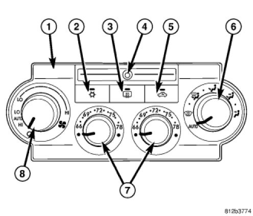
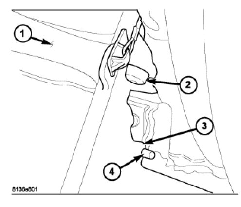
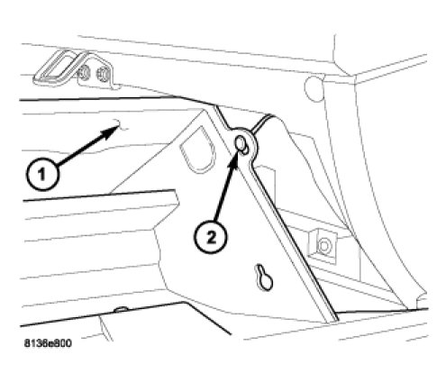
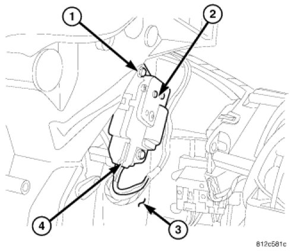
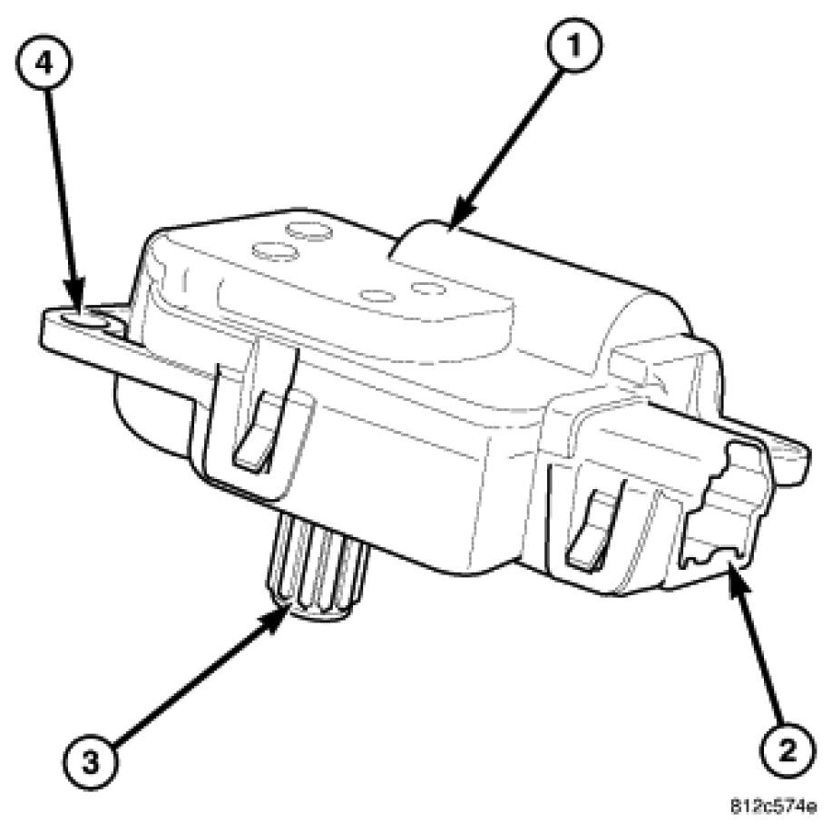
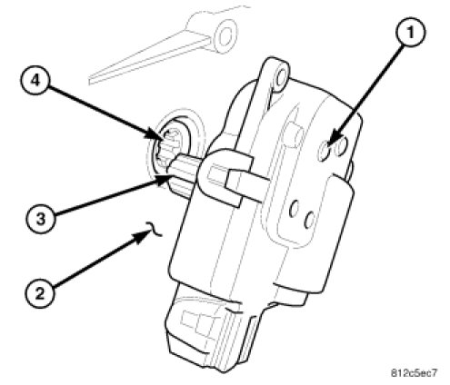

Written from the 3.5L V6 (VIN G) book. The passenger actuator only exists on cars with automatic dual-zone climate control (ATC): two temperature knobs and an AUTO setting. Single-zone manual (MTC) cars have one blend actuator, on the driver side.

This is instrument panel work. Disconnect and isolate the battery negative cable, then wait 2 minutes for the airbag capacitor to discharge before you start. On the 300 the battery is in the trunk; see the battery guide.
Book time is 0.4 h. The actuator can't be adjusted or repaired; the manual's fix is to replace it. Tap a step to check it off. Progress is saved in this browser only.
The HVAC box has four identical actuators. Only one is on the passenger side.
| Symptom | Actuator |
|---|---|
| Passenger vents blow the wrong temperature, or don't follow the right-hand temperature knob | Right blend doorbehind glove box · this guide |
| Driver vents blow the wrong temperature | Left blend doordriver side |
| Air comes out the wrong outlets (panel, floor, defrost) on both sides | Mode doordriver side · 1.1 h |
| Recirculation doesn't switch | Recirculation door |
The control finds door positions by counting motor pulses, and errors build up over time. The scan tool's Actuator Calibration homes every actuator and clears those errors. It takes about 90 s. It's the only test that finds door-travel-too-large or too-small faults.
Read the HVAC codes with a scan tool before disconnecting the battery. Losing battery power clears all active codes.
Start the engine. Set the blower to manual low, both temperature knobs to full cold, mode to panel.
Turn the right (passenger) temperature knob to full hot, wait 30 s, then back to full cold. Watch the scan tool for active codes.
In the scan tool's HVAC System Tests, run Actuator Calibration Test, then view codes. If the passenger side now works and no codes set, stop here.
If codes point at the right blend door actuator or its circuit, check the harness and connector at the actuator for chafed wires and bent, pushed-out or corroded pins before you buy a part.
Glove box out, three screws, one connector.
Disconnect and isolate the battery negative cable in the trunk. Wait 2 min before touching the instrument panel.
Open the glove box. Push in on both sides of the bin to clear the stops (2) and let it drop.

Pivot the bin down and unhook the hinge hooks (3) from the hinge brackets (4) at each end.
Turn the bin sideways and take the support strap and retainer (2) off its outboard end.

Lift the glove box out of the car.
Find the actuator (2) on the passenger side of the HVAC air distribution housing (3). Remove its three screws (1).

Pull the actuator off the housing, unplug the HVAC harness connector (4) and remove the actuator.
No indexing needed; the control calibrates the door electronically.
The blend, mode and recirculation actuators are interchangeable: same black housing, splined shaft (3), connector (2) and three mounting tabs (4).

Put the actuator (1) in place on the passenger side of the housing (2). Rotate it slightly if needed so the output shaft splines (3) line up with the blend door cam (4).

Fit the three screws. Tighten to 2 Nm (17 in-lb). They thread into plastic.
Plug in the HVAC harness connector.
Glove box: turn the bin sideways and fit the support strap and retainer to its outboard end.
Hook the bin hinge hooks onto the hinge brackets at each end and pivot the bin up.
Push in on both sides of the bin to get the stops past the panel, pivot it closed and shut it.
Reconnect the battery negative cable.
The control has to learn the new actuator's stop positions.
Start the engine. With the scan tool, run System Tests → Actuator Calibration Test. It takes about 90 s; every door returns to its requested position when it's done.
View codes. Diagnose and repair any that set, then clear stored codes.
Turn the right temperature knob to full hot, then full cold, and feel the passenger vents follow.
Do the battery reconnection checks: calibrate the auto-up front windows, and the steering angle sensor if the car has ESP. See After reconnecting in the battery guide.
Everything in this guide in one place.
| Item | Spec |
|---|---|
| Blend door actuator screws 3 per actuator | 2 Nm (17 in-lb) |
| Airbag capacitor discharge wait after disconnecting battery negative | 2 min |
| Actuator Calibration run time scan tool, ATC | ~90 s |
| Actuator supply | 12 V DC, reversible |
| Book time air blend actuator, replace | 0.4 h |
Source: LEMON manual for the 2007 Chrysler 300 V6-3.5L VIN G, Repair and Diagnosis: Heating and Air Conditioning, Air Door Actuator / Motor (Blend Door Actuator and Mode Door Actuator description, operation, removal and installation), Control Assembly (Automatic Dual Zone), Heating-A/C System Diagnostics, HVAC System Test (ATC); Body and Frame, Instrument Panel Glove Box removal and installation; and Parts and Labor: Air Door Actuator / Motor Labor Times. Figures are the manual's own scans; tap one to open it full size.